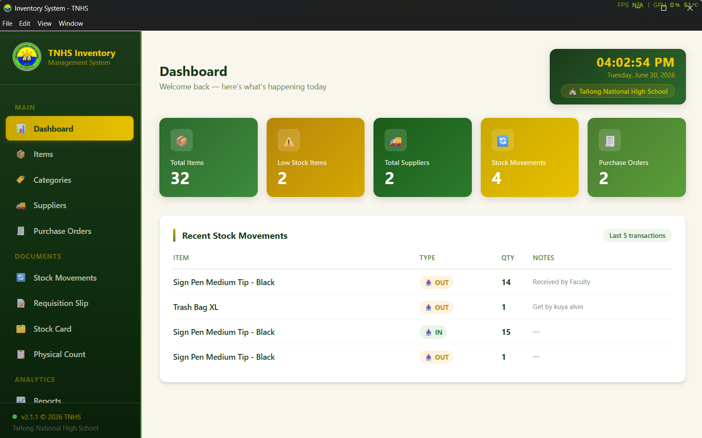

DEV
STATUS: DEPLOYED
Inventory Management System
Desktop system for Tañong National High School to track and manage school assets, replacing manual records with a searchable digital log.
- Electron
- Java
- SQL
- HTML/CSS/JS